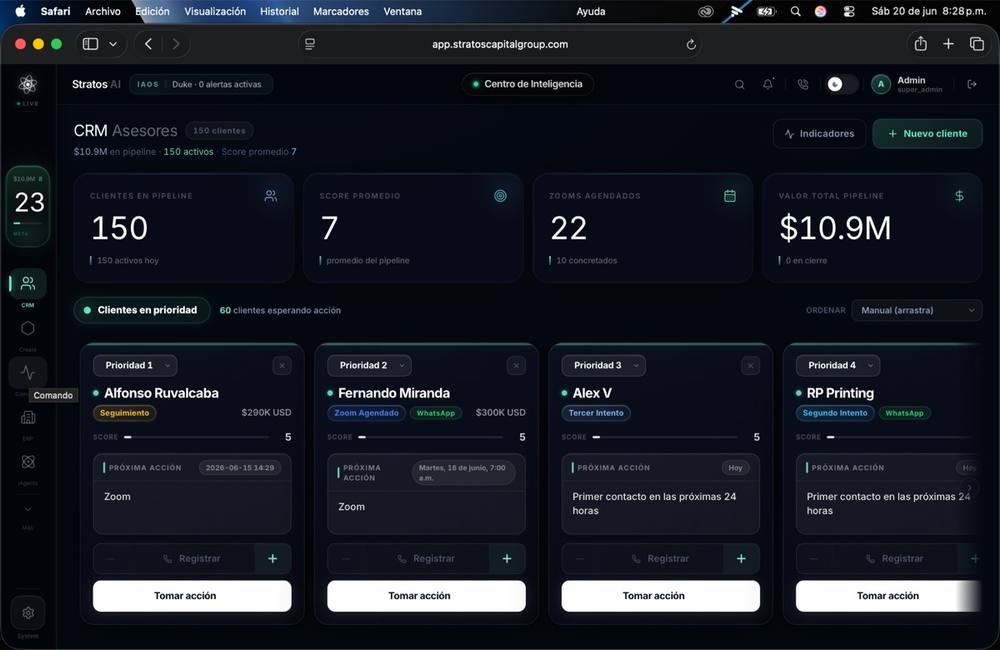

Clientes esperando respuesta
Agentes de voz y WhatsApp que responden preguntas, califican oportunidades y pasan la conversación a tu equipo cuando hace falta.
ATENCIÓN + SEGUIMIENTOConstruyo sistemas de IA que atienden a tus clientes, conectan tus herramientas y hacen avanzar tu operación. Desde la primera idea hasta el uso diario.
Hablas directamente con quien diseña y construye tu solución.
 2°26′ N · 76°36′ W
2°26′ N · 76°36′ W01 / POR DÓNDE EMPEZAMOS
Partimos de lo que frena tu negocio. Después elegimos la tecnología que tiene sentido.
Agentes de voz y WhatsApp que responden preguntas, califican oportunidades y pasan la conversación a tu equipo cuando hace falta.
ATENCIÓN + SEGUIMIENTOConecta tu CRM, documentos y herramientas del día a día. La información avanza sin que tu equipo la copie de un lado a otro.
OPERACIÓN + AUTOMATIZACIÓNDesde una web hasta una aplicación a medida o un asistente con memoria. Una primera versión útil que puedas probar de verdad.
PRODUCTO + IMPLEMENTACIÓN02 / TRABAJO SELECCIONADO
Productos propios y trabajo desarrollado en equipo. Explora las demostraciones y conoce qué hace cada sistema.
Voz, conocimiento y herramientas en un mismo lugar. Jarvis conecta una base de conocimiento personal con acciones cotidianas en la web y el computador.
Conocer la arquitectura ↗
Un mapa interactivo que conecta necesidades, recursos y ayudas durante emergencias. Una iniciativa propia construida para la comunidad.
Explorar la plataforma ↗
Voz, WhatsApp y seguimiento en un mismo flujo. Mi rol: arquitectura e implementación de la solución como parte del equipo de NSG.
03 / CÓMO TRABAJAMOS
Un alcance claro, avances visibles y un sistema que entiendes cómo usar.
Mapeamos el problema, las personas involucradas y qué haría valioso este proyecto.
Acordamos una primera versión, conectamos las herramientas necesarias y probamos con casos reales.
Lo ponemos en marcha, documentamos cómo funciona y acordamos soporte y siguientes mejoras.
ANTES DE CONVERSAR
No. Tú aportas el conocimiento de tu negocio. Yo traduzco el problema a una propuesta técnica y te explico las decisiones en lenguaje claro.
Eso es lo primero que revisamos. Comprobamos sus integraciones, accesos y limitaciones antes de acordar qué vamos a construir.
Depende del problema, el alcance y las integraciones. Después de entender tu caso, recibes una propuesta con entregables, costos de terceros y condiciones de soporte.
Recibes documentación y orientación para usar el sistema. El mantenimiento y las mejoras futuras se acuerdan como parte de la propuesta.
TU SIGUIENTE PASO
Cuéntame qué pasa hoy y qué te gustaría que funcionara mejor. Empecemos por ahí.
angelgarzonsarzosa@gmail.com